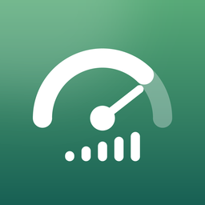

休肝日メータープライバシーポリシー
2026年10月 制定
休肝日メーター運営事務局（以下「運営者」）は、アプリ「休肝日メーター」（以下「本サービス」）における利用者の情報を、次のとおり取り扱います。
1. 飲酒の記録（端末の中だけに保存します）
本サービスで入力・記録する次の情報は、利用者の端末の中にだけ保存し、運営者や第三者のサーバーに送ることはありません。
・飲んだお酒の記録（日時・種類・容量・度数・純アルコール量・杯数・本数）と、休肝日の記録
・モード、週の目標、1日の区切りの時刻、ふだんの1日の量と飲酒代、いつもの1杯
・参考線の選択（男性／女性／なし）。性別そのものは尋ねませんが、選んだ参考線から推測できるため、ここに明記します。この選択も端末の中にだけ保存します
・「飲みたい」の記録（日時・強さ・状況・結果）と、「今日の作戦」の内容と結果
・そこから計算した休肝日の数、純アルコール量の合計、浮いたお金、節目
本サービスは、iPhoneの「ヘルスケア」（HealthKit）と連携しません。ヘルスケアのデータを読むことも、書き込むこともありません。また、飲酒の記録を iCloudなどのクラウドに置くことはありません。これらの情報は、アプリを削除すると消えます。
バックアップとCSVは、利用者が設定画面から自分でファイルに書き出す方法で行います。書き出したファイルの保管と、新しい端末への移し方は、利用者が選びます。運営者がそのファイルを受け取ることはありません。アプリは、アップデートの前と毎日1回、記録のコピーを端末の中（アプリの書類フォルダ）に作ります。このコピーも端末の外には送りません。
2. 外部に送信する情報（利用者情報の外部送信）
本サービスは、次の外部サービスに情報を送信します。飲酒に関する情報（量・杯数・日数・金額・参考線の選択・「飲みたい」の記録の内容）は、広告にも分析にも送りません。ホーム画面・ロック画面のウィジェット、Live Activity、通知には、広告を表示しません。
(1) Google AdMob（広告の表示）
送信先：Google LLC
送信する情報：広告識別子（利用者がトラッキングを許可した場合のみ）、端末の種類・OS、おおよその位置情報（IPアドレスから推定）、広告の表示・タップの記録（広告データ）、広告の仕組みの動作状況（異常終了・性能などの診断情報）
目的：広告の表示、効果の測定、不正の防止
広告を表示するのは、ホーム画面の下のバナーと、カレンダー・統計の1枠だけです。全画面の広告と動画の広告は表示しません。お酒・ギャンブル・医薬品やサプリメント・出会い系などの広告は表示しないように設定しています
Googleのポリシー：https://policies.google.com/technologies/partner-sites
本サービスは、利用状況の分析ツール（アクセス解析・不具合の記録サービスなど）を使っていません。
「広告なし＋応援」を購入した場合は、広告の表示を行わず、広告の仕組み（AdMob）を起動しないため、AdMobへの送信も止まります。
3. トラッキングの許可
広告識別子を広告に使うことについて、本サービスは iPhoneの「トラッキング」の許可を求めます。許可しなくても、本サービスの機能はすべて同じように使えます。許可しない場合、広告は利用者の興味に合わせないものになります。許可は、iPhoneの「設定」→「プライバシーとセキュリティ」→「トラッキング」からいつでも変えられます。
4. 通知
翌朝の確認などの通知は、端末の中で予約して表示します。通知の内容を運営者のサーバーから送ることはありません。ロック画面に飲酒の内容が出ないよう、通知の文は「きのうの記録をつけますか」のような中立の表現にしています。
5. App内課金
「広告なし＋応援」の購入や応援の支払いは、AppleのApp Storeを通じて行われます。運営者は、支払いの情報（カード番号など）を受け取りません。購入したかどうかは、端末と App Store のあいだで確認します。
6. 運営者が受け取る情報
運営者は、利用者の氏名・メールアドレス・飲酒の記録などを受け取りません。お問い合わせをいただいた場合に限り、返信のためにメールアドレスとお問い合わせの内容を受け取ります。
7. 第三者への提供
運営者は、上記2のほかに、利用者の情報を第三者に提供しません。
8. 年齢
本サービスは、20歳以上の方を対象としています。
9. 本ポリシーの変更
運営者は、必要に応じて本ポリシーを変更できます。重要な変更がある場合は、本サービス内などでお知らせします。
お問い合わせ
休肝日メーター運営事務局
メールアドレス：amaneko.support+kyukanbimeter@gmail.com